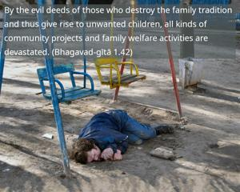
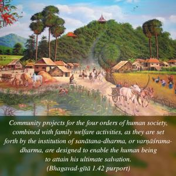

By the evil deeds of those who destroy the family tradition and thus give rise to unwanted children, all kinds of community projects and family welfare activities are devastated.


Community projects for the four orders of human society, combined with family welfare activities, as they are set forth by the institution of sanātana-dharma, or varṇāśrama-dharma, are designed to enable the human being to attain his ultimate salvation. Therefore, the breaking of the sanātana-dharma tradition by irresponsible leaders of society brings about chaos in that society, and consequently people forget the aim of life – Viṣṇu. Such leaders are called blind, and persons who follow such leaders are sure to be led into chaos.